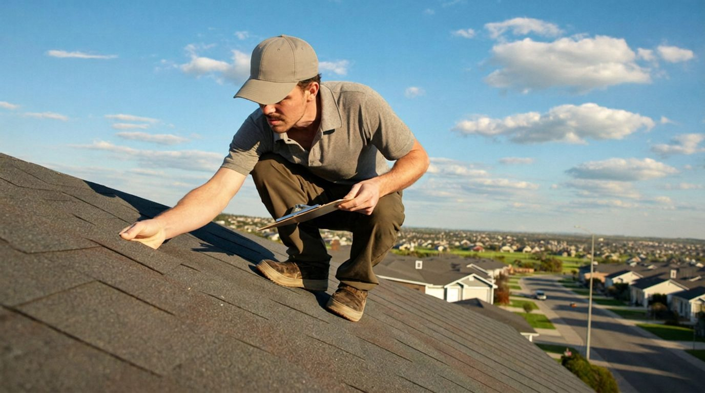

Can my insurance company make me replace my roof in Texas?
They can't force you. But they can decline to keep insuring you — which, if you have a mortgage, works out to nearly the same thing. Here's where the line actually sits.

It's the question homeowners ask us with the letter still in hand: "Can they actually do this?" The honest answer has two halves — what insurers legally can't do, and what they absolutely can. Knowing the difference tells you how much leverage you really have.
What they can do
- Decline to renew your policy over roof age or condition — with at least 60 days' notice in Texas
- Require an inspection or documentation as a renewal condition
- Downgrade roof coverage from replacement cost (RCV) to actual cash value (ACV) at renewal
- Raise your premium or add a separate wind/hail deductible
- Decline you as a new customer because of the roof
What they can't do
- Physically compel you to replace anything — it's your roof
- Non-renew without the required 60-day notice
- Cancel mid-term except for specific listed reasons (like nonpayment or fraud)
- Misrepresent what your policy covers
- Stop you from filing a complaint with the Texas Department of Insurance (800-252-3439)
Why insurers suddenly care so much about roofs
Texas leads the country in hail claims, and the roof is where most of an insurer's money goes after a storm. Carriers responded by getting picky: aerial imagery reviews at renewal, hard age cutoffs (15–20 years for asphalt shingles is the common range), and the quiet ACV downgrade — where your policy renews but a claim on an older roof pays depreciated value instead of the cost of a new roof. Many homeowners over 10-year-old roofs have this endorsement and don't know it. Pull your declarations page and look.
So what are your actual options?
- Push back with documentation. If the decision was made from a satellite photo, a professional inspection report showing real remaining life sometimes reverses it. Ask your agent — in writing — whether it can.
- Repair instead of replace. When the underwriter's concern is specific (curled shingles on one slope, worn flashing), documented repairs can be enough. This is the cheapest exit when it's available.
- Replace on your terms. If the roof is genuinely at end of life, replacing before you're forced to lets you pick the contractor, the shingle, and the schedule — and Class 4 impact-resistant shingles come with mandatory premium discounts in Texas that partially pay you back every year.
- Switch carriers. An independent agent can shop insurers with friendlier roof-age rules. Expect trade-offs: higher premiums or ACV-only roof coverage. And with a new roof, this problem disappears entirely — carriers compete for houses with new roofs.
We wrote a full step-by-step playbook for the deadline scenario — timelines, documentation, what to send your underwriter and when — in "Insurance says replace your roof — or they'll drop you". If you're weighing whether the roof really is at the end of its life, our guide to the 7 signs a Houston roof needs replacing is the honest checklist, and the 2026 Houston cost guide covers what replacement actually runs.
You can't out-argue an underwriter. But you can out-document one.
Want a straight answer about your roof?
Free inspection, honest verdict, written documentation you can hand your insurance company — whether the answer is "it's fine," "repair it," or "it's time."